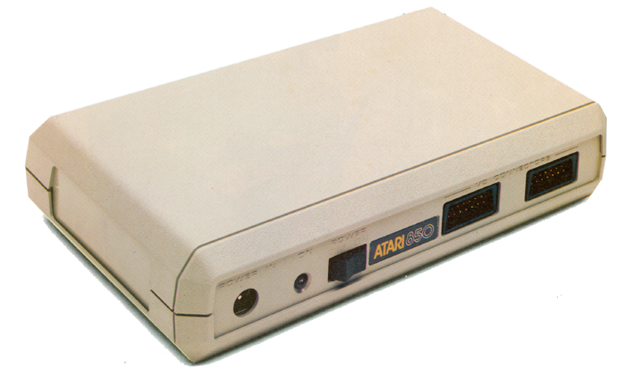
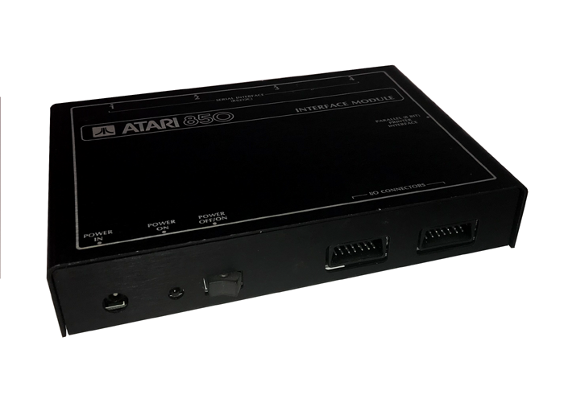

Atari 850 Operators Manual

The Atari 850 Interface Module
| The Atari 850 interface
module was introduced in 1980. It provided the Atari
400 and 800 computer systems with industry standard RS-232
serial ports and a
Centronics compatible Parallel Printer port. The 850 came with 4 RS-232 serial ports, however only Port #1 was widely used since it was the only port that had the full compliment of pin-outs for most modem use. The other ports were more geared towards terminal use and Port #4 was capable of TTY terminal usage. The Parallel Port, while Centronics compatible, used a 15 pin port, versus the later more widely and standard 25 Pin interface port. Also of note: the Serial RS-232 ports on the 850 are female 9 pin ports versus the industry standard male 9 pin ports. An assumption would be that Atari didn't want users attempting to plug joysticks in the Serial ports which most likely would've resulted in damage to the 850 interface module. Little known facts: #1: The ROM on the Atari 850 appears to have been upgradeable. If you open an 850 and look inside, you'll notice the shielding has a small slide off opening that directly accesses the socketed ROM. #2: The original first runs of Atari 850's were produced in an all black aluminum case. There was a lot of concern that the Interface would generate a large amount of RF interference so it was initially run in a aluminum case to completely shield it. 
|
Updated 4/8/2019